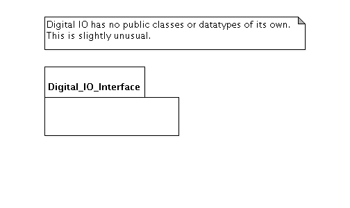

AUnit has the concept test case; for each test case there is a fixture, which corresponds to the standard setup that each test procedure in the test case expects.
The fixture is implemented using the test case operations Set_Up and Tear_Down.
ColdFrame supports Set_Up using its standard Domain.Initialize and Cascade_Initialize procedures.
ColdFrame supports Tear_Down by providing Domain.Tear_Down and Cascade_Tear_Down procedures.

Most systems are composed of numerous domains, some of which provide resources and capabilities to others. In the diagram, the application-level House Management domain uses the services of the device-level Digital IO domain.
While unit-testing House Management, it's a Bad Idea to use the real Digital IO, for various reasons:
What is needed is a version of Digital IO which provides the interfaces of the real thing but with an alternative implementation, more amenable to testing.
The first thing to do is to make a child package, Digital IO Interface, stereotyped «include». You may like to make it a separately controlled unit; you might even choose to create it as part of the development of the using domain, depending on the order of development.
In this package put all the «public» classes and «callback» types, any «type» types used by them, and any «exception»s.
| Complete package |  |
| Interface package |
|
In the Interface package, include the tag {name = Digital IO}. This means that if you select the Digital IO Interface package and generate code from it, code will be generated as if it were the package Digital IO (though the code will still be placed in the directory derived from the actual package name, Digital_IO_Interface.gen/).
If you want, you can provide implementations in the parallel Digital_IO_Interface.impl/ directory, as normal. You'll want to provide some means of storing in parameters and providing values for out parameters and function results; you'll want to provide queries to find out what values were passed in. Remember that you can write package specs in the .impl directory, if needed.